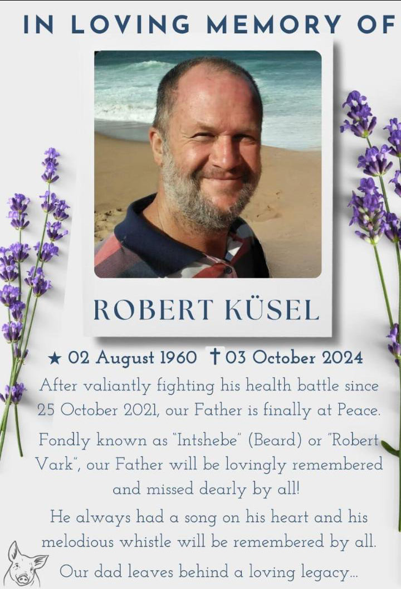

HANS KUSEL
Born:dd-mmm-yyyy
Died:dd-mmm-c1985
Occ: Pig farmer
Married:24-APR-1954
in Lutheran Church, Muden, South Africa
Reception at Muden Agricultural Hall
ELIZABETH ISABELLA HOWDEN
Born:21-JUN-1931
in Krugersdrop, Johannesburg, South Africa
Died: 15-JAN-2015
in South Africa
Children:
Rudi(b:c1955, Lives in Germany, Florian, Daniel, Tristrian, Jenny, Fabian )
Martin(b:c1958, Wife:Sheeren, Shane c1991, Andrew c1996, Chrisy-Lee c2000)
Robert(b:02-AUG-1960 to 03-OCT-2024: Timothy c1989, Daughtert1 c1991, Kirsten c2001 )
Note: Elisabeth Kusel (nee Howden) married again after her husbands death

[ Howden Home ]